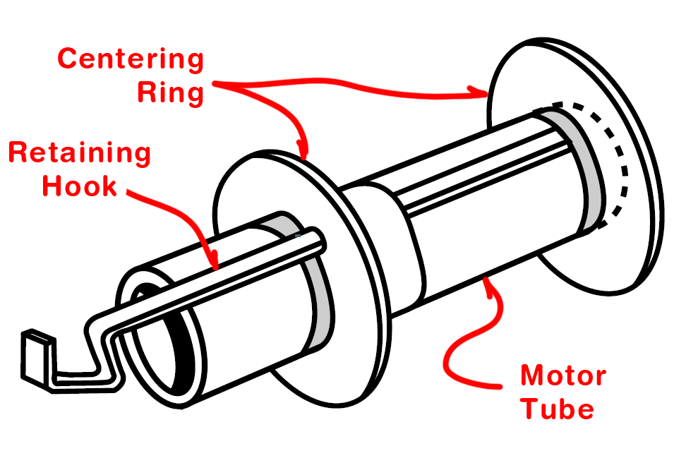

<div id="content-source">  
  <div id="openrocket-motor-mount">
    <h1>Motor Mounts in OpenRocket</h1>
    <p>
        The motor mount is the special assembly at the bottom of the rocket that holds the motor. It has two essential functions:</p>
    <ul>
        <li>Ensure the motor doesn't slide forward while firing or falling out during ejection charge.</li>
        <li>Center the motor inside the rocket body tube.</li>
    </ul>
        <div class ="content-container">
            <div class = "content-left">
                <p>The main components of a motor mount include the motor tube (1), centering rings (2), engine clip (3), and a motor block (4). The motor tube houses the rocket motor, while centering rings keep the mount aligned within the rocket body. An engine clip secures the motor in place, preventing it from being ejected during operation, and the thrust ring ensures the motor doesn't slide forward under the pressure of ignition. Larger rocket motors have a thrust ring on the bottom of the motor around the nozzle, making the motor block unnecessary.
                </p>
            </div>
            <div class="content-right">
                
            </div>
        </div>
        <iframe
            width= "100%"
            height = 600px
            src="https://www.youtube.com/embed/N9Jc1PjpoxY?wmode=opaque"
            title="AHS Rocketry Motor Mount Design in OpenRocket"
            frameborder="0"
            allow="accelerometer; clipboard-write; gyroscope; picture-in-picture"
            allowfullscreen>
        </iframe>
    /div>
</div>